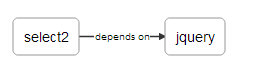

class: splash <big>Thibault Duchateau</big><br/> <small><a href="https://twitter.com/tduchateau">@tduchateau</a></small><br /> <small><a href="http://dandelion.github.io/">http://dandelion.github.io</a></small><br /> --- class: agenda, right * # Quick introduction * Brief history * Dandelion-Core * Dandelion-Datatables * Some statistics * Future * Demo --- # Quick introduction * Free & Open Source Java framework * Focused on two aspects of Web development: * __Assets management__ (js, css): organization in bundles, HTML injection, soon asset minification and merging * __Integration of powerful Javascript librairies__ thanks to a set of components * Licensed under <a href="http://opensource.org/licenses/BSD-3-Clause">BSD 3-Clause</a> * Hosted on <a href="https://github.com/dandelion">Github</a> * Current version: 0.10.0 --- # Thanks to... .center[ <br /> <br /> <img src="assets/images/logo_github_small.gif" style="width: 15%; margin-left: 30px;"> ] --- class: agenda, right * Quick introduction * # Brief history * Dandelion-Core * Dandelion-Datatables * Some statistics * Future * Demo --- class: no-margin # Brief history <iframe src='http://cdn.knightlab.com/libs/timeline/latest/embed/index.html?source=0Arzyq1ZY3NKldGdrZFRNM3Z3b0haUzl5NnBfV3Rzenc&font=DroidSerif-DroidSans&maptype=toner&lang=en&height=550' width='100%' height='550' frameborder='0'></iframe> .footnote.ref[ <a href="http://dandelion.github.io/history">History</a> ] --- class: agenda, right * Quick introduction * Brief history * # Dandelion-Core * Dandelion-Datatables * Some statistics * Future * Demo --- .soft[ # Overview ] --- # Asset bundles ### Declarative approach, via JSON (soon XML and JavaConfig) ````javascript { "bundle" : "jquery", "assets": [ { "name": "jquery", "version": "1.11.1", "type": "js", "locations": { "webapp": "/assets/js/jquery-1.11.1.js" } } ] } ```` Several locations are allowed for each asset: <strong>webapp</strong>, <strong>classpath</strong>, <strong>CDN</strong>, <strong>JAR</strong>, <strong>WebJar</strong> and <strong>API</strong>! .footnote.ref[ <a href="http://dandelion.github.io/dandelion/features/asset-bundles/">See the docs</a> ] --- # Dependencies between bundles ### You can declare one or more bundles as dependencies ````javascript { "bundle" : "select2", "dependencies": [ "jquery" ], "assets": [ { "name": "select2", "version": "3.4.8", "type": "js", "locations": { "webapp": "/assets/js/select2.js" } }, { "name": "select2", "version": "3.4.8", "type": "css", "locations": { "webapp": "/assets/css/select2.css" } } ] } ```` --- # Asset locators * ### Internal components used by Dandelion to **fetch assets** in different ways * ### Used via the corresponding **location key** in the bundle declaration .footnote.ref[ <a href="http://dandelion.github.io/dandelion/features/asset-locators/">See the docs</a> ] --- # Asset locators — webapp .left-column[ ### Project ] .right-column[ ````json your-project |__ src |__ main |__ webapp |__ assets |__ js |__ app.js ```` ] --- # Asset locators — webapp .left-column[ ### Project ### Bundle ] .right-column[ ````json { "bundle" : "my-bundle", "assets": [{ "name": "my-application", "version": "1.0.0", "type": "js", "locations": { "webapp": "/assets/js/app.js" } }] } ```` ] --- # Asset locators — webapp .left-column[ ### Project ### Bundle ### HTML ] .right-column[ ````xml <script src="/[contextPath]/assets/js/app.js"></script> ```` ] --- # Asset locators — classpath .left-column[ ### Project ] .right-column[ ````json your-project |__ src |__ main |__ resources |__ js |__ app.js ```` ] --- # Asset locators — classpath .left-column[ ### Project ### Bundle ] .right-column[ ````json { "bundle" : "my-bundle", "assets": [{ "name": "my-application", "version": "1.0.0", "type": "js", "locations": { "classpath": "js/app.js" } }] } ```` ] --- # Asset locators — classpath .left-column[ ### Project ### Bundle ### HTML ] .right-column[ ````xml <script src="/[contextPath] /dandelion-assets /[cacheKey] /app.js"></script> ```` ] --- # Asset locators — cdn .left-column[ ### Bundle ] .right-column[ ````json { "bundle" : "jquery", "assets": [{ "name": "jquery", "version": "1.11.0", "type": "js", "locations": { "cdn": "//cdnjs.cloudflare.com/.../jquery.js" } }] } ```` ] --- # Asset locators — cdn .left-column[ ### Bundle ### HTML ] .right-column[ ````xml <script src="//cdnjs.cloudflare.com/.../jquery.js"></script> ```` ] --- # Asset locators — jar .left-column[ ### JAR ] .right-column[ ````json datatables-core |__ src |__ main |__ resources |__ META-INF |__ resources |__ folder |__ js |__ app.js ```` ] --- # Asset locators — jar .left-column[ ### JAR ### Bundle ] .right-column[ ````json { "bundle" : "my-bundle", "assets": [{ "name": "my-app", "version": "1.0.0", "type": "js", "locations": { "jar": "folder/js/app.js" } }] } ```` ] --- # Asset locators — jar .left-column[ ### JAR ### Bundle ### HTML ] .right-column[ Inside a Servlet 2.0+ container: ````xml <script src="/[contextPath] /dandelion-assets /[cacheKey] /app.js"></script> ```` Inside a Servlet 3.0+ container: ````xml <script src="/[contextPath]/folder/js/app.js"></script> ```` ### Dandelion automatically detects whether the running server is using the Servlet 3.x API or lower ] --- # Asset locators — webjar .left-column[ ### New dependency ] .right-column[ ````xml <dependency> <groupId>com.github.dandelion</groupId> <artifactId>dandelion-webjars</artifactId> <version>0.10.0</version> </dependency> ```` This dependency brings a new dependency to the [webjars-locator](https://github.com/webjars/webjars-locator) project, which is internally used by the locator to locate assets inside WebJars ] --- # Asset locators — webjar .left-column[ ### New dependency ### WebJar ] .right-column[ ````xml <dependency> <groupId>org.webjars</groupId> <artifactId>bootstrap</artifactId> <version>3.2.0</version> </dependency> ```` ] --- # Asset locators — webjar .left-column[ ### New dependency ### WebJar ### Bundle ] .right-column[ ````json { "bundle" : "my-bundle", "assets": [{ "name": "bootstrap", "version": "3.2.0", "type": "css", "locations": { "webjar": "bootstrap.css" } }] } ```` ] --- # Asset locators — webjar .left-column[ ### New dependency ### WebJar ### Bundle ### HTML ] .right-column[ Inside a Servlet 2.0+ container: ````xml <link rel="stylesheet" href="/[contextPath] /dandelion-assets /[cacheKey] /bootstrap.css"/> ```` Inside a Servlet 3.0+ container: ````xml <link rel="stylesheet" href="/[contextPath] /webjars /bootstrap /3.2.0 /css /bootstrap.css" /> ```` ### Dandelion automatically detects whether the running server is using the Servlet 3.x API or lower ] --- # Asset locators — delegate * Reads the content of an asset from a **special parameter** stored inside the `AssetRequestContext` * This special parameter: * must be stored under the `DelegateLocator.DELEGATED_CONTENT_PARAM` key * must be a class that implements `DelegatedContent` and where the `getContent()` method must return the asset content to be injected ] --- # Asset locators — delegate .left-column[ ### Bundle ] .right-column[ ````json { "bundle": "my-bundle", "assets": [{ "name": "my-generated-asset", "version": "1.0.0", "type": "js", "locations": { "delegate": "app.js" } }] } ```` ] --- # Asset locators — delegate .left-column[ ### Bundle ### Generator ] .right-column[ ````java public class SomeJavascriptGenerator implements DelegatedContent { @Override public String getContent(HttpServletRequest request) { return "alert('Hey!');"; } } ```` ] --- # Asset locators — delegate .left-column[ ### Bundle ### Generator ### ARC ] .right-column[ ````java AssetRequestContext .get(request) .addParameter("my-generated-asset", DelegateLocator.DELEGATED_CONTENT_PARAM, new SomeJavascriptGenerator()); ```` ] --- # Asset locators — delegate .left-column[ ### Bundle ### Generator ### ARC ### HTML ] .right-column[ ````java <script src="/[contextPath] /dandelion-assets /[cacheKey] /app.js"></script> ```` Where `app.js`: ````javascript alert('Hey!'); ```` ] --- # Bundle loaders ### Scan for bundles in the classpath, in the following order: __VendorBundleLoader__: intended to load _vendor bundles_ (e.g. jquery.json) __ComponentBundleLoader__: intended to load _components bundles_ (e.g. ddl-dt.json) __DandelionBundleLoader__: intended to load _user bundles_ (e.g. custom-bundle.json) .footnote.ref[ <a href="http://dandelion.github.io/dandelion/features/bundle-loaders/">See the docs</a> ] --- # Bundle graph On the application startup, Dandelion creates a `Context` that will be injected into each request. This `Context` provide several information: * all configuration options (coming from the properties files) * a bundle graph (<a href="http://en.wikipedia.org/wiki/Directed_acyclic_graph">DAG</a>), built from all scanned bundles Example: ````xml src |__ main |__ resources |__ dandelion |__ jquery.json |__ select2.json ```` .center[  ] .footnote.ref[ <a href="http://dandelion.github.io/dandelion/features/asset-bundles/building-a-bundle-graph/">See the docs</a> ] --- # Interacting with the bundle graph ### 1/4) Using the JSP taglib ````xml <%@ taglib prefix="dandelion" uri="http://github.com/dandelion" %> <dandelion:bundle includes="select2" /> ```` ### 2/4) Using the Thymeleaf dialect ````xml <!DOCTYPE html> <html xmlns:th="http://www.thymeleaf.org" xmlns:ddl="http://github.com/dandelion" ddl:bundle-includes="select2"> ... </html> ```` .footnote.ref[ <a href="http://dandelion.github.io/dandelion/features/asset-bundles/interacting-with-the-asset-bundles/">See the docs</a> ] --- # Interacting with the bundle graph ### 3/4) Using the fluent API ````java AssetRequestContext .get((HttpServletRequest) request) .addBundle("select2"); ```` ### 4/4) Using the configuration file ("permanent" bundles) ````xml bundle.includes=select2 ```` .footnote.ref[ <a href="http://dandelion.github.io/dandelion/features/asset-bundles/interacting-with-the-asset-bundles/">See the docs</a> ] --- # Interacting with the bundle graph ### Whatever the technology used, Dandelion automatically injects all requested assets into the HTML code: * in the right order * in the configured position, by default CSS in `<head>` and JS just before `</body>` * and (soon) applies the right HTTP headers, therefore optimizing browser caching ````html <html> <head> <link href="/context/assets/css/select2.css" /> </head> <body> ... <script src="/context/assets/js/jquery-1.11.1.js"></script> <script src="/context/assets/js/select2.js"></script> </body> </html> ```` --- class: beta # Asset processors ### Intended to process assets, in different ways... Built-in processors: * __jsMinYui__:JS minification based on <a href="http://yui.github.io/yuicompressor/">Yahoo's YUI Compressor</a> * __cssMinYui__:CSS minification based on <a href="http://yui.github.io/yuicompressor/">Yahoo's YUI Compressor</a> * __cssMin__:CSS minification based on a <a href="http://www.andy-roberts.net/coding/csscompressor">fork of YUI</a> * __jsMin__:JS minification based on a <a href="http://www.andy-roberts.net/coding/csscompressor">fork of YUI</a> * __cssUrlRewriting__:Image URLs rewriting in CSS Soon: * __cssLess__: Convert Less resources to CSS * __cssSass__: Convert Sass resources to CSS * __cssImport__: Processes @import * __coffeeScript__: Convert CoffeeScript to JavaScript * ... .footnote.ref[ <a href="http://dandelion.github.io/dandelion/features/asset-processors/">See the docs</a> ] --- class: beta # Development/production modes ## Development mode * Built-in dev tools available * Server-side caching disabled * Browser caching disabled ## Production mode * No bundle graph viewer, no bundle reloading * Minification enabled * Server-side caching enabled * (soon) Browser caching enabled * (soon) GZIP compression * (soon) Asset versioning * (soon) JMX monitoring --- .left-column[ ## Dev tools ### Bundle graph viewer ] .right-column[ ### Dev tool allowing to visualize how Dandelion-Core handles assets, in the current request .center[ ````html http://example.com/context/some/uri?showGraph ```` ] .footnote.ref[ Available in <i>development mode</i> only <a href="http://dandelion.github.io/dandelion/features/development-mode/bundle-graph-viewer.html">See the docs</a> ] ] --- .left-column[ ## Dev tools ### Bundle graph viewer ### Asset reloading ] .right-column[ During development, both server-side and client-side caching are disabled. Client-side, Dandelion-Core applies the following HTTP headers: * __Cache-Control__ = `no-cache, no-store, must-revalidate` (HTTP 1.1) * __Pragma__ = `no-cache` (HTTP 1.0) * __Expires__ = `0` (Proxies) ] --- .left-column[ ## Dev tools ### Bundle graph viewer ### Asset reloading ### Bundle reloading ] .right-column[ During development, all changes made in asset bundles can be reflected. Just manually append a new `reloadBundles` request parameter to the current URL to perform a __full bundle reloading__. .center[ ````html http://example.com/context/some/uri?reloadBundles ```` ] .footnote[ Available in <i>development mode</i> only ] ] --- # Configuration options .left-column[ ## Properties ] .right-column[ .center[ ### dandelion.properties ] ````prop dandelion.mode=production ```` ] --- # Configuration options .left-column[ ## Properties ## Filter init param ] .right-column[ .center[ ### filter init param > dandelion.properties ] ````xml <filter> <filter-name>dandelion</filter-name> <filter-class>...DandelionFilter</filter-class> <init-param> <param-name>dandelion.mode<param-name> <param-value>production</param-value> </init-param> </filter> ```` ] --- # Configuration options .left-column[ ## Properties ## Filter init param ## System property ] .right-column[ .center[ ### system property > filter init param > dandelion.properties ] ````shell -Ddandelion.mode=production ```` ] .footnote.ref[ <a href="http://dandelion.github.io/dandelion/docs/ref/configuration/">See the docs</a> ] --- class: agenda, right * Quick introduction * Brief history * Dandelion-Core * # Dandelion-Datatables * Some statistics * Future * Demo --- # Introducing Dandelion-Datatables * First and most advanced component of the Dandelion framework * Facilitates the integration of <a href="http://legacy.datatables.net/">DataTables</a>, an awesome jQuery plugin which will add advanced interaction controls to any HTML table * Easy to use * Easy to extend * Inspired by the excellent <a href="http://www.displaytag.org/1.2/">DisplayTag</a> library --- # Key features * JSP & <a href="http://www.thymeleaf.org/">Thymeleaf</a> support * Typical features such as paging, filtering and sorting * DOM sources, AJAX sources and server-side processing * Responsive design * Export in multiple formats * Several themes available: <a href="http://getbootstrap.com/2.3.2/">Bootstrap 2</a>, <a href="http://getbootstrap.com/">Bootstrap 3</a>, <a href="http://jqueryui.com/themeroller/">jQueryUI</a> * I18n * Integration with Spring/Spring MVC and other projects --- # What it looks like with JSP? ````xml <%@ taglib prefix="datatables" uri="http://github.com/dandelion/datatables" %> <datatables:table id="myTableId" data="${persons}"> <datatables:column title="Id" property="id" /> <datatables:column title="LastName" property="lastName" /> <datatables:column title="FirstName" property="firstName" /> <datatables:column title="City" property="address.town.name" /> <datatables:column title="Mail" property="mail" /> </datatables:table> ```` * `id`: HTML pass-through attribute * `data`: DOM source, collection of POJOs * `title`: sets the content of the column header * `property`: name of the object's attribute of the collection being iterated on --- # What it looks like with Thymeleaf? ````xml <table id="myTableId" dt:table="true"> <thead> <tr> <th>Id</th> <th>Firstname</th> <th>Lastname</th> <th>City</th> <th>Mail</th> </tr> </thead> <tbody> <tr th:each="person : ${persons}"> <td th:text="${person.id}">1</td> <td th:text="${person.firstName}">John</td> <td th:text="${person.lastName}">Doe</td> <td th:text="${person?.address?.town?.name}">Nobody knows!</td> <td th:text="${person.mail}">john@doe.com</td> </tr> </tbody> </table> ```` * `dt:table`: enables the Dandelion-Datatables dialect in the current table --- .soft[ # How it works? ] .left-column[ ## HTML ] .right-column[ The HTML is generated: * either by Dandelion-Datatables (JSP) * or directly by Thymeleaf ````html <table id="myTableId"> <thead> <tr> <th>Id</th> <th>Firstname</th> <th>Lastname</th> <th>City</th> <th>Mail</th> </tr> </thead> <tbody> <tr> <td>1</td> <td>Wing</td> <td>Cunningham</td> <td></td> <td>ornare.libero@mail.edu</td> </tr> ... </tbody> </table> ```` ] --- .soft[ # How it works? ] .left-column[ ## HTML ## JavaScript ] .right-column[ As well as the JS code that initializes DataTables ````javascript var oTable_myTableId = $('#myTableId'); var oTable_myTableId_params = { "aoColumns":[ { "mData":"id", "sDefaultContent":"" }, { "mData":"lastName", "sDefaultContent":"" }, { "mData":"firstName", "sDefaultContent":"" }, { "mData":"address.town.name", "sDefaultContent":"" }, { "mData":"mail", "sDefaultContent":"" } ] } $(document).ready(function(){ oTable_myTableId.dataTable(oTable_myTableId_params); }); ```` ] --- .soft[ # How it works? ] .left-column[ ## HTML ## JavaScript ## Required assets ] .right-column[ An `AssetRequestContext` is filled with the required assets, either by the JSP taglib or by the Thymeleaf dialect... ````java AssetRequestContext .get(request) .addBundle("datatables") .addBundle("ddl-dt") ...; ```` ... so that they will be injected by Dandelion-Core into the response ````html <link href="//cdn/jquery.dataTables.css"/> ... <script src="//cdn/jquery.js"></script> <script src="//cdn/jquery.dataTables.js"></script> <script src="/[contextPath] /dandelion-assets /[SHA] /dandelion-datatables-0.10.0.js"></script> ```` ] --- class: center, middle # Usage examples --- # HTML (DOM) sources * Read data **directly from the [DOM](http://en.wikipedia.org/wiki/Document_Object_Model)** * Works well with **small/medium** data sources --- # HTML sources — example .left-column[ ## Controller ] .right-column[ Example with a Spring MVC controller ````java @Controller public class Controller { @ModelAttribute("persons") public List<Person> populateTable() { return personService.findAll(); } } ```` ] --- # HTML sources — example .left-column[ ## Controller ## JSP ] .right-column[ ````html <datatables:table id="myTableId" data="${persons}"> <datatables:column title="Id" property="id" /> ... </datatables:table> ```` ] --- # HTML sources — example .left-column[ ## Controller ## JSP ## Thymeleaf ] .right-column[ ````html <table id="myTableId" dt:table="true"> ... <tbody> <tr th:each="person : ${persons}"> <td th:text="${person.id}">1</td> ... </tr> </tbody> <table> ```` ] --- # AJAX sources * Read data from virtually **any JSON data source** that can be obtained **by AJAX** * **Client-side** processing * Works well with **small/medium** data sources --- # AJAX sources .left-column[ ## Controller ] .right-column[ Example with a Spring MVC controller ````java @Controller public class AjaxController { @RequestMapping(value = "/persons") public @ResponseBody List<Person> findAll() { return personService.findAll(); } } ```` ] --- # AJAX sources .left-column[ ## Controller ## JSP ] .right-column[ ````html <datatables:table id="myTableId" url="/persons"> <datatables:column title="Id" property="id" /> ... </datatables:table> ```` Dandelion-Datatables rewrites URLs by appending the context path, if needed. ] --- # AJAX sources .left-column[ ## Controller ## JSP ## Thymeleaf ] .right-column[ ````html <table id="myTableId" dt:table="true" dt:url="@{/persons}"> ... <tbody> <tr th:each="person : ${persons}"> <td th:text="${person.id}">1</td> ... </tr> </tbody> <table> ```` ] --- # AJAX sources + server-side processing * Read data from virtually **any JSON data source** that can be obtained by **AJAX** * **Server-side** processing * Each draw of the table will result in a **new AJAX request being made to get the required data** * Works well with **small/medium/large** data sources --- # AJAX sources + server-side processing ### Dandelion-Datatables provides a convenient API * `DatatablesCriterias` * Stores all DataTables parameters (current page, entries to display, sorted columns, ...) ````java @RequestMapping(value = "/persons") public @ResponseBody DatatablesResponse<Person> filter(HttpServletRequest request) { // Maps request parameter to a DatatablesCriterias instance DatatablesCriterias criterias = DatatablesCriterias.getFromRequest(request); ... ```` --- # AJAX sources + server-side processing ### Dandelion-Datatables provides a convenient API * `DataSet` * All entries returned by the data access layer should be wrapped in this class in order to build a `DataTablesResponse` ````java ... // Get filtered and paged data DataSet<Person> persons = personService.findPersons(criterias); ... ```` --- # AJAX sources + server-side processing ### Dandelion-Datatables provides a convenient API * `DataTablesResponse` * Contains a builder that helps to return the data in the format required by DataTables * Must be converted into JSON ````java ... // Build the response that will be converted to JSON return DatatablesResponse.build(persons, criterias); } ```` --- # AJAX sources + server-side processing .left-column[ ### Controller ] .right-column-small[ Example with a Spring MVC AJAX controller ````java @RequestMapping(value = "/persons") public @ResponseBody DatatablesResponse<Person> filter(HttpServletRequest request) { // Maps request parameter to a DatatablesCriterias instance DatatablesCriterias criterias = DatatablesCriterias.getFromRequest(request); // Get filtered and paged data DataSet<Person> persons = personService.findPersons(criterias); // Build the response that will be converted to JSON return DatatablesResponse.build(persons, criterias); } ```` ] --- # AJAX sources + server-side processing .left-column[ ### Controller ### JSP ] .right-column[ ````xml <datatables:table ... url="/persons" serverSide="true"> <datatables:column property="id" /> <datatables:column property="firstName" /> <datatables:column property="lastName" /> <datatables:column property="address.town.name" /> <datatables:column property="mail" /> </datatables:table> ```` ] --- # AJAX sources + server-side processing .left-column[ ### Controller ### JSP ### Thymeleaf ] .right-column[ ````xml <table ... dt:url="@{/persons}" dt:serverSide="true"> <thead> <tr> <th dt:property="id">Id</th> <th dt:property="firstName">Firstname</th> <th dt:property="lastName">Lastname</th> <th dt:property="address.town.name">City</th> <th dt:property="mail">Mail</th> </tr> </thead> </table> ```` ] --- # Paging, sorting, filtering .left-column[ ## JSP ] .right-column[ ````html <datatables:table ... pageable="false"> <datatables:column ... sortable="false" /> <datatables:column ... filterable="true" /> ... </datatables:table> ```` ] --- # Paging, sorting, filtering .left-column[ ## JSP ## Thymeleaf ] .right-column[ ````html <table ... dt:pageable="false" > <thead> <th dt:sortable="false">Id</th> <th dt:filterable="true">LastName</th> ... </thead> ... <table> ```` ] --- # Export — what formats? ## Text-based formats: CSV, XML Built-in support, no dependency or extra required. --- # Export — what formats? ## Binary-based formats: PDF, XLS, XLSX Some extras already exist and provide: * an export class that is used by default if the corresponding export format is enabled * the corresponding library in compile scope (e.g. <a href="http://poi.apache.org/">Apache POI</a> for the XLS format) Available extras: * PDF: <a href="https://github.com/dandelion/dandelion-datatables/tree/dandelion-datatables-0.10.0/datatables-extras/datatables-export-itext">datatables-export-itext</a> * XLS: <a href="https://github.com/dandelion/dandelion-datatables/tree/dandelion-datatables-0.10.0/datatables-extras/datatables-export-poi">datatables-export-poi</a> * XLSX: <a href="https://github.com/dandelion/dandelion-datatables/tree/dandelion-datatables-0.10.0/datatables-extras/datatables-export-poi-ooxml">datatables-export-poi-ooxml</a> --- # Export — 2 ways ## Filter-based * Fast to set up * Always export full data source * Only compatible with DOM sources ## Controller-based * Requires a bit more work to set up * WYSIWYE => What You See Is What You ... Export! * Compatible with DOM and AJAX sources --- # Export — filter-based .left-column[ ## New dependency ] .right-column[ ````xml <dependency> <groupId>com.github.dandelion</groupId> <artifactId>datatables-export-itext</artifactId> <version>0.10.0</version> </dependency> ```` ] --- # Export — filter-based .left-column[ ## New dependency ## web.xml ] .right-column[ ````xml <!-- Dandelion-Datatables filter used for basic export --> <filter> <filter-name>datatables</filter-name> <filter-class>...DatatablesFilter</filter-class> </filter> <filter-mapping> <filter-name>datatables</filter-name> <url-pattern>/*</url-pattern> </filter-mapping> ```` ] --- # Export — filter-based .left-column[ ## New dependency ## web.xml ## JSP ] .right-column[ ````xml <datatables:table ... export="pdf"> <datatables:column property="id" /> <datatables:column property="firstName" /> <datatables:column property="lastName" /> <datatables:column property="address.town.name" /> <datatables:column property="mail" /> </datatables:table> ```` ] --- # Export — filter-based .left-column[ ## New dependency ## web.xml ## JSP ## Thymeleaf ] .right-column[ ````xml <table id="myTable" dt:table="true" dt:export="pdf"> <thead> <tr> <th>Id</th> <th>Firstname</th> <th>Lastname</th> <th>City</th> <th>Mail</th> </tr> </thead> <tbody> <tr th:each="person : ${persons}"> <td th:text="${person.id}">1</td> <td th:text="${person.firstName}">John</td> <td th:text="${person.lastName}">Doe</td> <td th:text="${person.address.town.name}">Nobody knows!</td> <td th:text="${person.mail}">john@doe.com</td> </tr> </tbody> </table> ```` ] --- # Export — controller-based .left-column[ ### New dependency ] .right-column[ ````xml <dependency> <groupId>com.github.dandelion</groupId> <artifactId>datatables-export-itext</artifactId> <version>0.10.0</version> </dependency> ```` ] --- # Export — controller-based .left-column[ ### New dependency ### JSP ] .right-column[ ````xml <datatables:table id="myTableId" url="/persons" export="pdf"> <datatables:column property="id" /> <datatables:column property="firstName" /> ... <datatables:export type="csv" url="/export.pdf" /> </datatables:table> ```` ] --- # Export — controller-based .left-column[ ### New dependency ### JSP ### Thymeleaf ] .right-column[ ````xml <div dt:conf="myTableId"> <div dt:confType="export" dt:type="pdf" dt:url="@{/export.pdf}"></div> </div> <table ... dt:url="@{/persons}" dt:export="pdf"> <thead> <tr> <th dt:property="id">Id</th> <th dt:property="firstName">Firstname</th> <th dt:property="lastName">Lastname</th> <th dt:property="address.town.name">City</th> <th dt:property="mail">Mail</th> </tr> </thead> </table> ```` ] --- # Export — controller-based .left-column[ ### New dependency ### JSP ### Thymeleaf ### Controller (1/4) ] .right-column-small[ ````java @RequestMapping(value = "/export", produces = "application/pdf") public void pdf(@DatatablesParams DatatablesCriterias criterias, HttpServletRequest request, HttpServletResponse response) { // Get data to export using the provided criteria List<Person> persons = personService.findPersons(criterias); ... ```` ] --- # Export — controller-based .left-column[ ### New dependency ### JSP ### Thymeleaf ### Controller (2/4) ] .right-column-small[ ````java ... // Build the export configuration ExportConf exportPdfConf = new ExportConf.Builder("pdf") .header(true) .exportClass(new PdfExport()) .build(); ... ```` ] --- # Export — controller-based .left-column[ ### New dependency ### JSP ### Thymeleaf ### Controller (3/4) ] .right-column-small[ ````java ... // Build the table to export using the above data // and the export configuration HtmlTable table = new HtmlTableBuilder<Person>() .newBuilder("tableId", persons, request, exportPdfConf) .column().fillWithProperty("id").title("Id") .column().fillWithProperty("firstName").title("Firtname") .column().fillWithProperty("lastName").title("Lastname") .column().fillWithProperty("address.town.name").title("City") .column().fillWithProperty("mail").title("Mail") .column() .fillWithProperty("birthDate", "{0,date,dd-MM-yyyy}") .title("BirthDate") .build(); ... ```` ] --- # Export — controller-based .left-column[ ### New dependency ### JSP ### Thymeleaf ### Controller (4/4) ] .right-column-small[ ````java ... // Render the export file in the browser ExportUtils.renderExport(table, exportPdfConf, response); } ```` ] --- # I18n: DataTables' information **datatables.properties**: non-translatable properties ````xml global.css.class=table table-striped table-bordered table-condensed global.extra.theme=bootstrap2 ```` **datatables_EN.properties**: all EN translations ````xml global.i18n.msg.processing=Processing... global.i18n.msg.search=Search: global.i18n.msg.info=Showing _START_ to _END_ of _TOTAL_ entries ```` **datatables_FR.properties**: all FR translations ````xml global.i18n.msg.processing=Traitement en cours... global.i18n.msg.search=Rechercher : global.i18n.msg.info=Affichage de l'élément _START_ à _END_ sur _TOTAL_ éléments ```` --- # I18n: column headers * Based on `LocaleResolver` and `MessageResolver` interfaces * Built-in implementations: * `SpringLocaleResolver` / `SpringMessageResolver` * `JstlLocaleResolver` / `JstlMessageResolver` * `Struts1LocaleResolver` / `Struts1MessageResolver` * `Struts2LocaleResolver` / `Struts2MessageResolver` * Possible to plug-in custom locale and message resolvers --- # I18n: example with Spring .left-column[ ### Spring config ] .right-column[ ````xml <bean id="messageSource" class="..."> <property name="basename" value="classpath:messages" /> </bean> ```` ] --- # I18n: example with Spring .left-column[ ### Spring config ### Resource bundles ] .right-column[ Location: ````xml src |__ main |__ resources |__ messages.properties |__ messages_FR.properties ```` messages.properties: ````xml table.header.lastname=Lastname table.header.firstname=Firstname ```` messages_FR.properties: ````xml table.header.lastname=Nom table.header.firstname=Prénom ```` ] --- # I18n: example with Spring .left-column[ ### Spring config ### Resource bundles ### JSP ] .right-column[ ````xml <datatables:table id="myTableId" data="${persons}"> ... <datatables:column titleKey="table.header.firstname" ... /> <datatables:column titleKey="table.header.lastname" ... /> ... </datatables:table> ```` ] --- # I18n: example with Spring .left-column[ ### Spring config ### Resource bundles ### JSP ### Thymeleaf ] .right-column[ ````xml <table id="myTableId" dt:table="true"> <thead> <tr> ... <th th:text="#{table.header.firstname}">Firstname</th> <th th:text="#{table.header.lastname}">Lastname</th> ... </tr> </thead> ... </table> ```` ] --- # Theming Supported themes: * <a href="http://jqueryui.com/themeroller">jQueryUI ThemeRoller</a> * <a href="http://getbootstrap.com/2.3.2/">Bootstrap 2</a> * <a href="http://tableclothjs.com/">Tablecloth</a> * <a href="https://github.com/Comanche/datatables-responsive">Responsive</a> * <a href="http://getbootstrap.com/">Bootstrap 3</a> * <a href="https://github.com/Comanche/datatables-responsive">Responsive</a> --- # Theming .left-column[ ## JSP ] .right-column[ ````html <datatables:table ... theme="bootstrap3" cssClass="table"> <datatables:column property="id" /> <datatables:column property="firstName" /> <datatables:column property="lastName" /> <datatables:column property="address.town.name" /> <datatables:column property="mail" /> </datatables:table> ```` ] --- # Theming .left-column[ ## JSP ## Thymeleaf ] .right-column[ ````html <table ... dt:theme="bootstrap3" class="table"> <thead> <tr> <th>Id</th> <th>Firstname</th> <th>Lastname</th> <th>Street</th> <th>Mail</th> </tr> </thead> <tbody> <tr th:each="person : ${persons}"> <td th:text="${person?.id}">1</td> <td th:text="${person?.firstName}">John</td> <td th:text="${person?.lastName}">Doe</td> <td th:text="${person?.address?.town?.name}">Nobody knows!</td> <td th:text="${person?.mail}">john@doe.com</td> </tr> </tbody> </table> ```` ] --- class: agenda, right * Quick introduction * Brief history * Dandelion-Core * Dandelion-Datatables * # Some statistics * Future * Demo --- # Some statistics * 35 releases (source: <a href="https://github.com/dandelion">GitHub</a>, all repos) * 15 pull requests merged (source: <a href="https://github.com/dandelion">GitHub</a>, all repos) * 9 contributors from 6 countries (source: <a href="https://github.com/dandelion">GitHub</a>, all repos) * 1432 commits (source: <a href="https://www.ohloh.net/p/dandelion">Ohloh</a>) * 121,770 LOC (source: <a href="https://www.ohloh.net/p/dandelion">Ohloh</a>) * 98 GitHub stars (source: <a href="https://github.com/dandelion">GitHub</a>, all repos) * ~80 followers on Twitter (source: <a href="https://twitter.com/dandelion_proj">Twitter</a>) * ~270 topics, ~10000 views in the forum (source: <a href="http://dandelion.48353.n6.nabble.com/">Nabble</a>) * 3200+ redeploys/restarts prevented, saving about 106h (source: <a href="http://zeroturnaround.com/software/jrebel/">JRebel</a>) --- class: agenda, right * Quick introduction * Brief history * Dandelion-Core * Dandelion-Datatables * Some statistics * # Future * Demo --- # Future .left-column[ ### Dandelion-Core ] .right-column[ - Full support for asset minification and merging - Improvements on asset bundles: externalization, configuration via XML, JavaConfig - Add new processors for meta-frameworks (CoffeeScript, Less, ...) - Add support for conditionnal assets (e.g. IE8+, IE9+) - Add support for CSS sprites - New `AssetCache` implementation based on <a href="http://hazelcast.com/">Hazelcast</a> - <a href="http://forge.jboss.org/index.html">JBoss Forge</a> plugin allowing to scaffold a project based on Dandelion - Add support for <a href="http://requirejs.org/">RequireJS</a> - <a href="http://bower.io/">Bower</a> integration ] --- # Future .left-column[ ### Dandelion-Core ### Dandelion-Datatables ] .right-column[ * New extension for editable tables (<a href="https://editor.datatables.net/">Editor</a>, <a href="http://www.appelsiini.net/projects/jeditable">jEditable</a>, ...) * Add support for more <a href="http://datatables.net/extensions/index">DataTables' extensions</a> * Add support for <a href="http://datatables.net/">DataTables 1.10.0</a> * New theme for <a href="http://foundation.zurb.com/">Foundation</a> * Add WebSocket support for continously-updating tables (<a href="http://async-io.org/">Atmosphere</a>, Spring MVC 4) * Add support for <a href="http://projects.spring.io/spring-data-rest/">Spring Data REST</a> ] --- # Future .left-column[ ### Dandelion-Core ### Dandelion-Datatables ### New components! ] .right-column[ * Dandelion-GUA? (Google Universal Analytics) * Dandelion-Forms? * <a href="http://dandelion-forum.48353.x6.nabble.com/">All ideas are welcome</a>! ] --- class: agenda, right * Quick introduction * Brief history * Dandelion-Core * Dandelion-Datatables * Some statistics * Future * # Demo --- # Demo .center[ ## https://github.com/dandelion/dandelion-samples ]